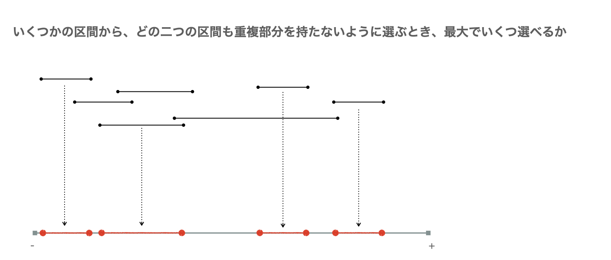
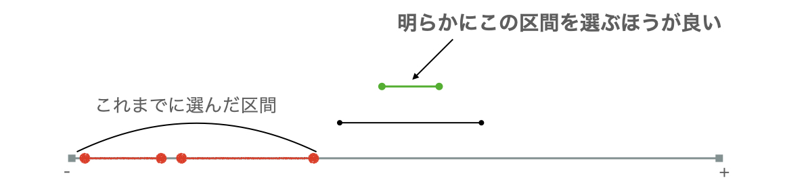
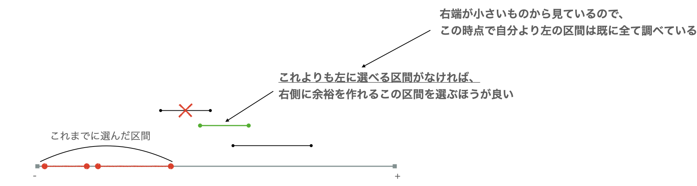

区間スケジューリング問題とは、区間の集合からいくつかの区間を選ぶとき、どの区間部分同士も重複部分を持たないように選べる最大数を求める問題です。

解答はシンプルで、右端が小さい区間から見ていき、今見ている区間の左端が、これまでで最後に選んだ (採用した) 区間の右端と重ならないなら、今見ている区間を採用することができます。

右端が小さい区間から愚直に選んでいくことで、自分より右に空きスペースができて嬉しいことで正当性が示せていると思いませんか？？？

実はこの問題の答えは、以下を満たす点の集合 \(S\) の最小サイズと一致します。